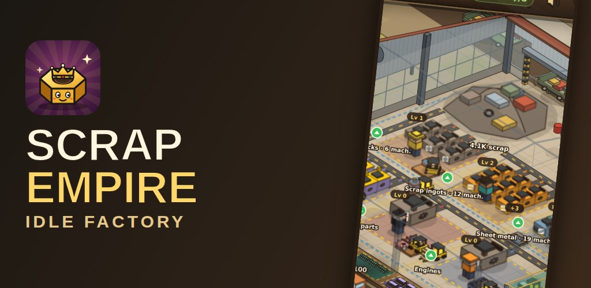

Scrap Empire: Idle Factory
Scrap Empire: Idle Factory
Tap scrap, run forklifts, ship by truck, train and boat: build a factory empire.
Start with a pile of scrap and a tap. Crush it into blocks, smelt it into ingots, roll it into sheets, then turn it into pipes, beams, engine parts, engines, rebuilt cars, railway wagons and shipping containers.
10 production zones, each with its own helper with a personality, machines that transform as you upgrade them and forklifts that carry full loads to the dock. Trucks take the goods away and pay you; wagons leave on the freight train and containers on the cargo ship, with routes to farther destinations that pay more.
Every day brings three daily goals and a streak reward that grows for 7 days in a row. Special orders show up now and then with a short deadline and a bonus if you deliver in time, and a golden truck drops by to pay big.
When your empire is big enough, restart with prestige to earn Golden screws: each one makes everything you earn worth 5 % more, forever.
Day and night cycle with the real clock, a cheerful isometric factory, and progress that keeps going while the game is closed. Play in short sessions, with one hand. In English and Spanish.


Scrap Empire: Idle Factory (en español)
Toca chatarra, mueve carretillas, envía en tren y barco y levanta tu imperio.
Empiezas con una pila de chatarra y un toque. Aplástala en bloques, fúndela en lingotes, lamínala en chapa y conviértela en tubos, vigas, piezas de motor, motores, coches reconstruidos, vagones de tren y contenedores.
10 zonas de producción, cada una con su ayudante con personalidad, sus máquinas que se transforman al mejorarlas y sus carretillas, que llevan tandas completas al muelle. Los camiones se llevan lo producido y te pagan; los vagones salen en el tren de mercancías y los contenedores en el barco, con rutas a destinos más lejanos que pagan más.
Cada día trae tres objetivos diarios y un premio de racha que crece durante 7 días seguidos. De vez en cuando llegan pedidos especiales con poco plazo y una bonificación si los entregas a tiempo, y pasa un camión dorado que paga a lo grande.
Cuando tu imperio sea grande, reinicia con prestigio para ganar Tornillos de oro: cada uno hace que todo lo que cobras valga un 5 % más, para siempre.
Ciclo de día y noche con el reloj real, una fábrica isométrica alegre y progreso que sigue con el juego cerrado. Partidas cortas y a una mano. En español e inglés.


Logo & icons / Logo e iconos
Logo: Tuerca coronada / Crowned nut (propuestas / options)


Google Play

